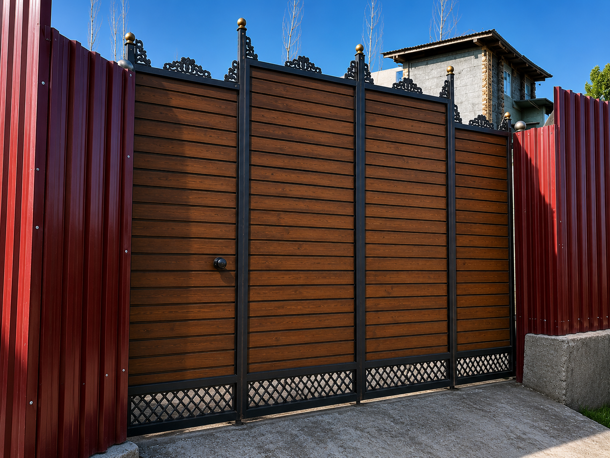
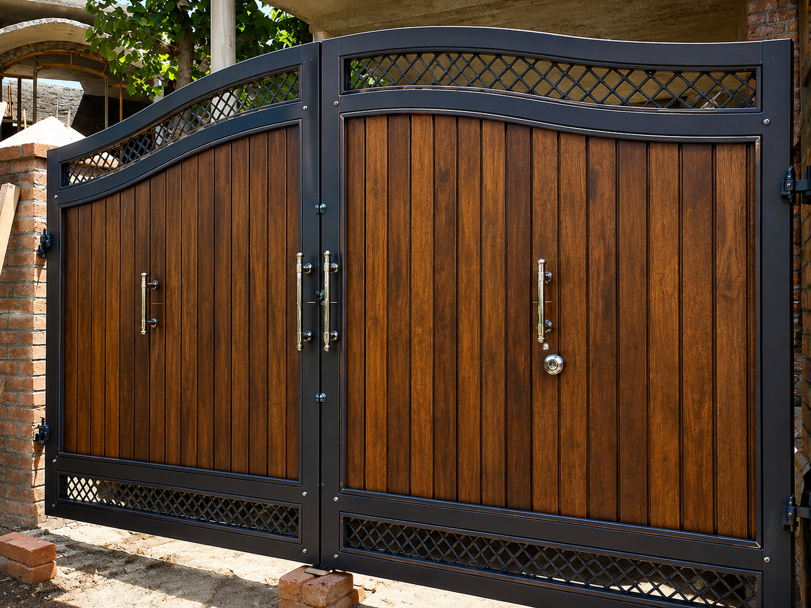
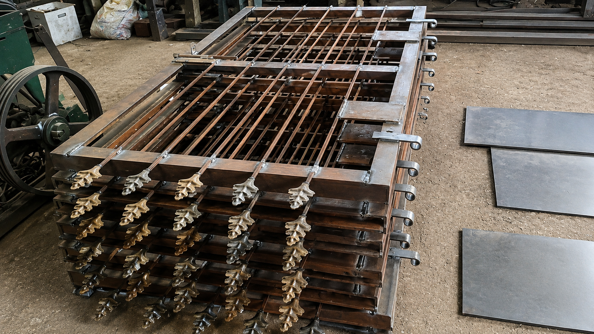
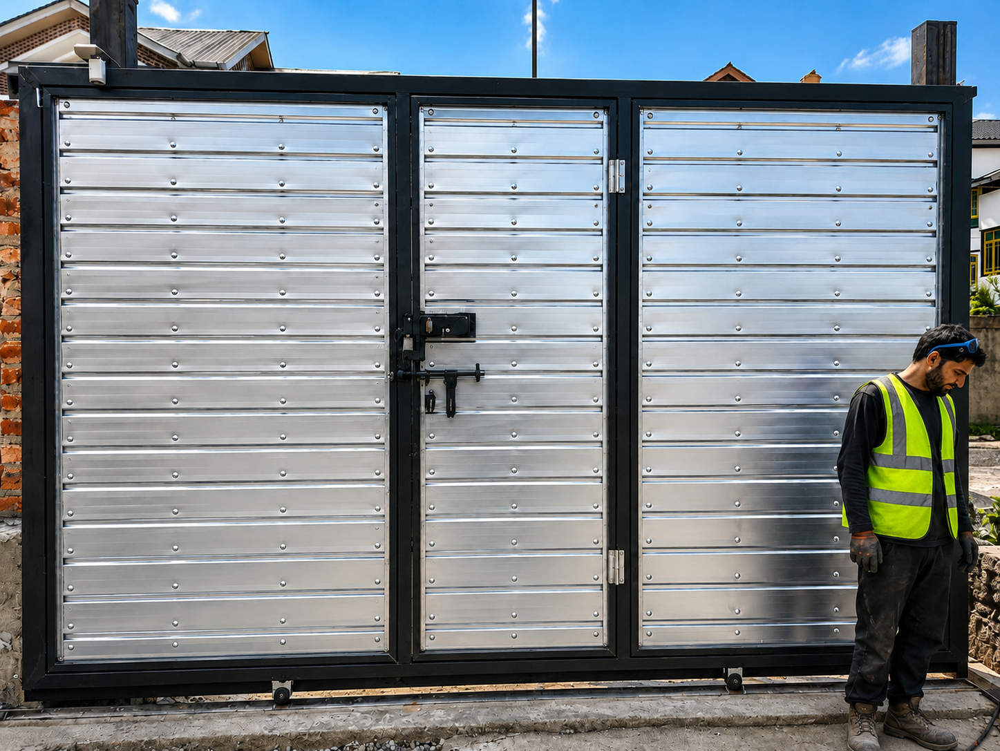
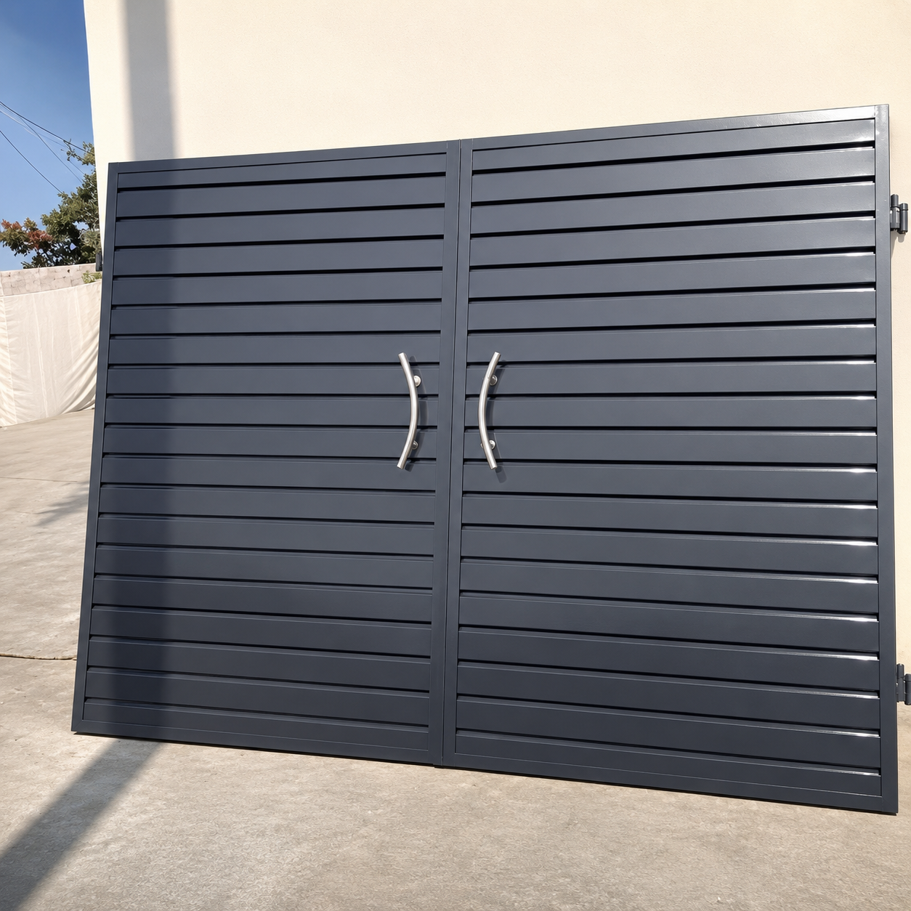
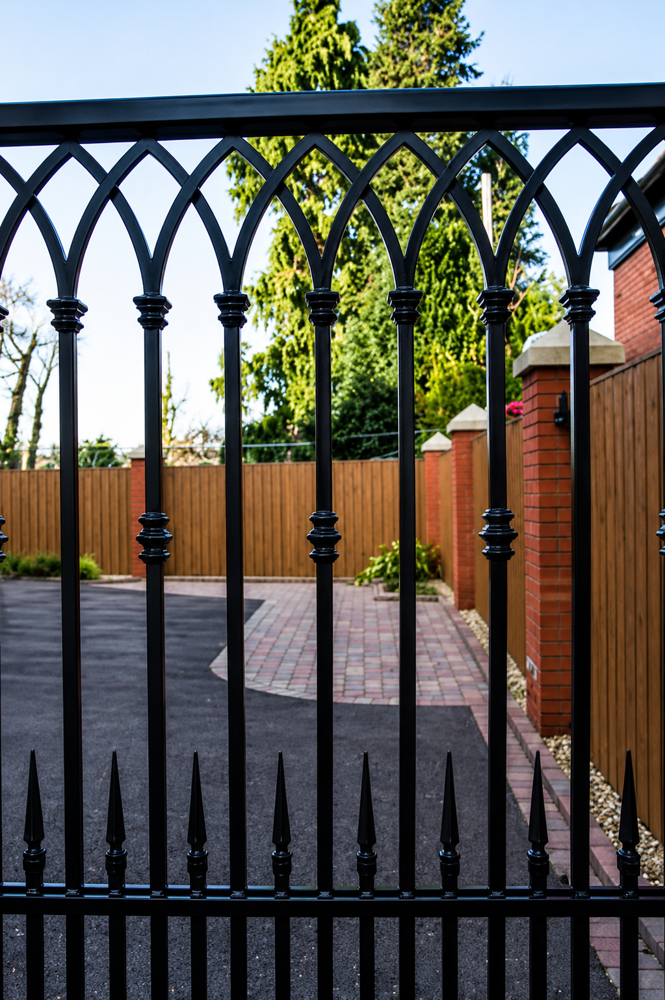
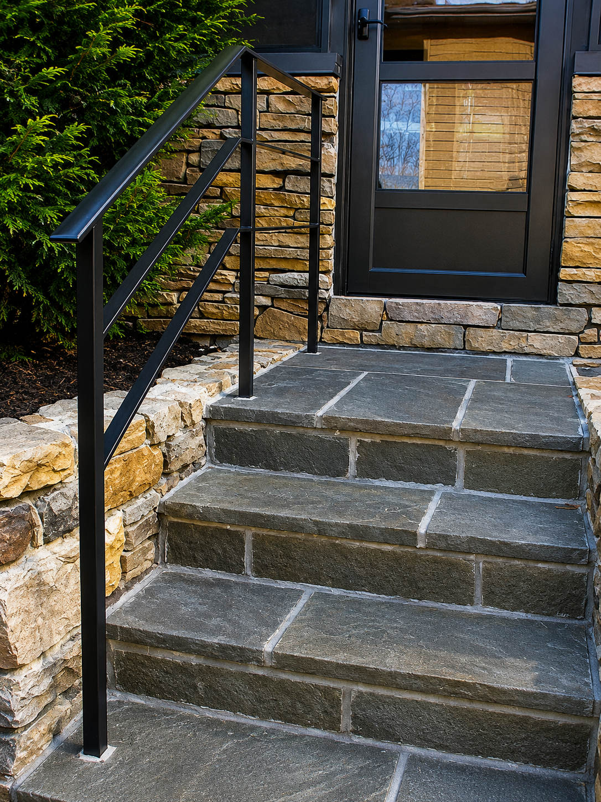
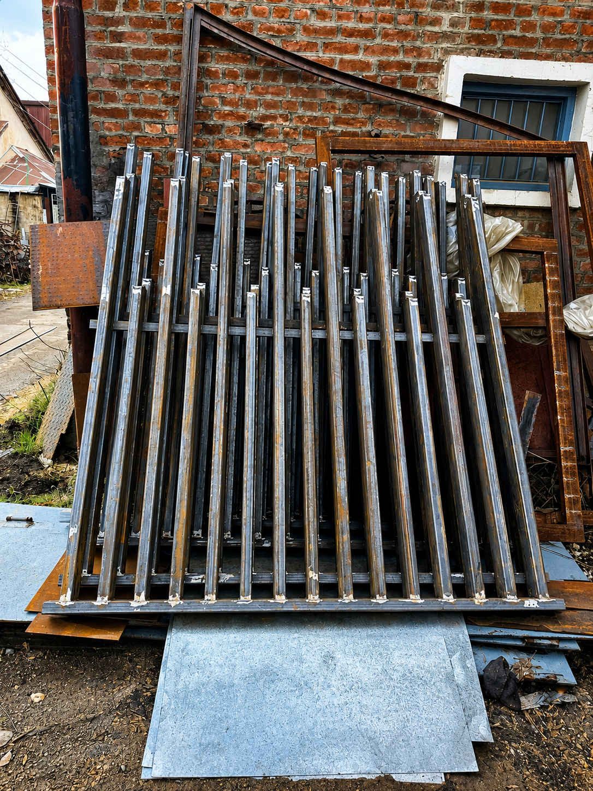

GATES & GRILLS · PROJECT GALLERY
Crafted for
every entrance.
Custom gates, grills and railings that pair strong steelwork with a considered architectural finish.

PROJECT OVERVIEW
Details that make an entrance.
From contemporary gates to protective grills and durable railings, our workshop delivers tailored steelwork for homes, institutions and commercial properties.
Each piece is fabricated to the project’s required dimensions, style and finish, then prepared for dependable installation.
08Project photographs
03Core product types
100%Custom fabrication
GATES & GRILLS · GALLERY






